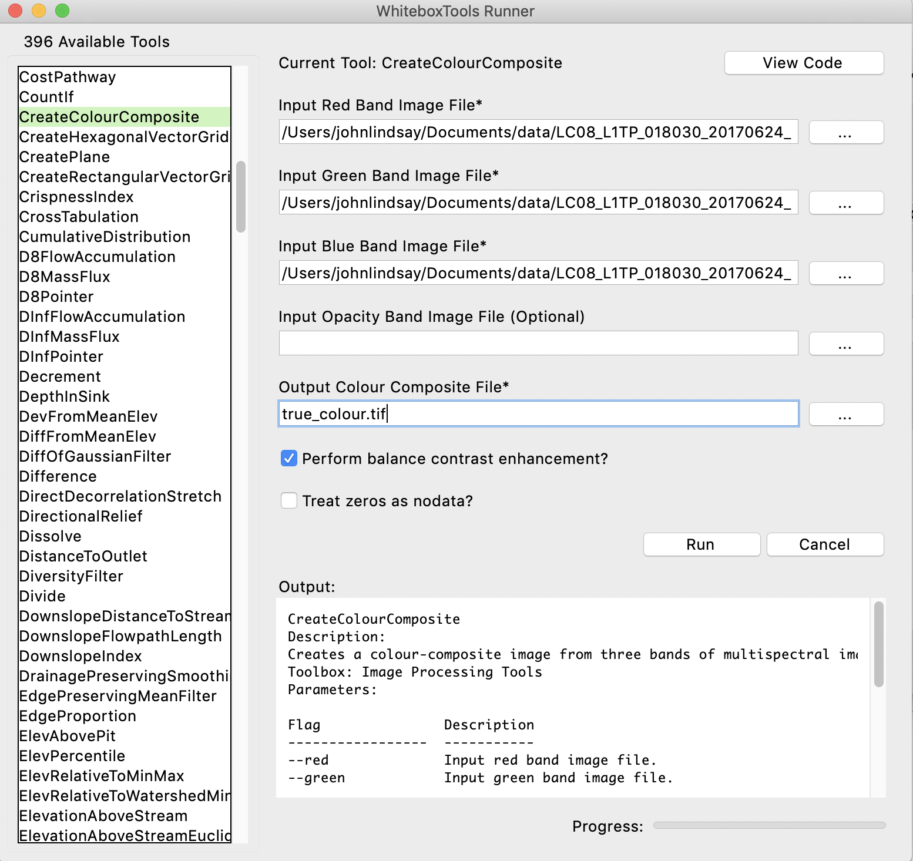

Part 3: Colour Composite Images
A multispectral dataset contains an enormous wealth of information, however, it can be frustrating trying to interpret these data by examining individual bands. It is possible to combine the information contained in three bands into a single colour image, known as a colour composite. Colour composites allow us to interpret the relative brightnesses, on a pixel-by-pixel basis, for three regions of the electromagnetic spectrum (i.e. bands) simultaneously. Notice that while the three bands that are represented by the composite image are being displayed using the red, green, and blue channels of your display (i.e. your monitor is creates a range of visible colours by combining each of red, green, and blue visible light in varying intensities), the bands themselves may well be derived from regions of the spectrum that fall outside of the visible light region. If, however, the three bands of a composite image correspond with the red, green, and blue bands, the resulting image will be a true colour composite and will look very much like a normal colour photograph.
Using the CreateColourComposite tool, available from the WhiteboxTools Runner application, create a true-colour composite image (also known as a natural-colour composite). Enter band4.tif, band3.tif, and band2.tif into the red, green, and blue band image inputs and call the output file true_colour.tif. You do not need to specify an opacity image.

Using your data visualization software (ArcGIS, Whitebox GAT, QGIS, etc.), display the true_colour.tif composite image. We could refer to this image as a 4-3-2 colour composite to designate the bands that were used to create it. Include a screenshot of your true-colour composite image with your report (2 marks).
3.1. Zoom into the University of Guelph campus. What is the large bright red coloured spot, apparent in the true colour composite, and located within the Guelph campus? (1 mark)
3.2. What has caused the swirls of beige-coloured water along the shoreline of Lake Erie west of Long Point? (1 mark)
3.3. Examine the western side of Greater Toronto Area (GTA), including the Mississauga area. If you are unfamiliar with this region, use Google Maps to locate Highway 401 and Highway 407 in the colour-composite image. What causes the difference in the appearance (brightness and colour) of these two of the major east-west corridors? (1 mark)
The main benefit of multi-spectral data is that you are able to derive information about the land surface from regions of the spectrum well beyond the visible part of the spectrum. So called 'false-colour composite' images are created when bands corresponding to one or more regions outside of the visible spectrum are placed into the red, green, blue channels of a composite colour image.
3.4. Create a 5-4-3 colour composite (i.e. place band 5 in the red channel, band 4 in the green channel, and band 3 in the blue channel) and a 7-6-4 colour composite and include print outs of these images with your hand-in. (2 marks)
3.5. Describe how each of these two 'false-colour' composite images compare to the true-colour composite image. Suggest some applications for which these images may be more appropriate than the true colour composite image. (6 marks; hint: if you Google 'Landsat band combinations', there are several useful resources, just be mindful that we are using Landsat 8 data in this lab and other Landsat satellites have different band designations.)